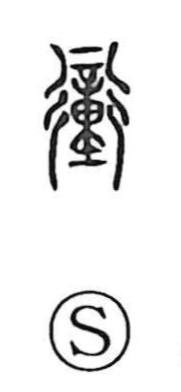

衝

Uncategorized
Kun: tsuku, ataru | On: sho
to collide ・ to strike ・ to charge ・ thoroughfare
Explanation
Shirakawa sees 衝 as a phono-semantic compound: the phonetic element 重, which also supplies the on-reading in characters like 踵 and 動, is paired with 行, the graph of a crossroads or roadway. The Shuowen glosses it as “to pass through a way,” and in practice it converges on the idea of force applied along a path. Closely related to 撞 “to ram,” 衝 depicts striking upon the road—driving straight in. The Book of Odes even mentions a siege chariot called 臨衝, fitted with iron at the tip of its long poles to smash fortress gates. From these images, 衝 comes to mean a head-on blow or impact, and by extension a main thoroughfare or direct line of advance.